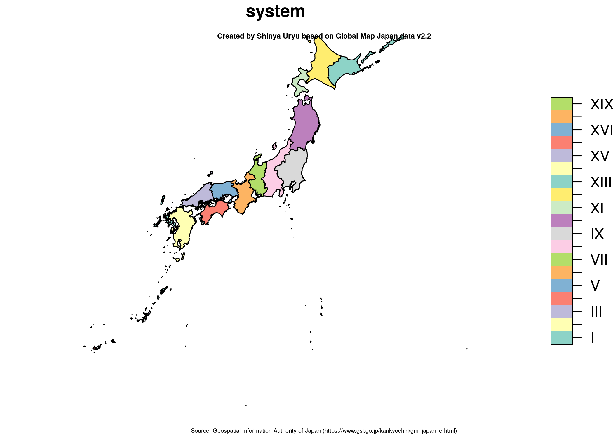
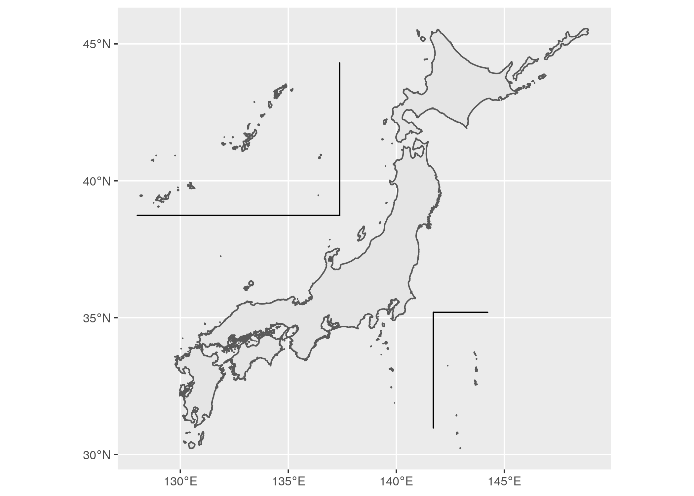

国絵図 (kuniezu)
(Sorry, English version of README is not availavle for now.)


{kuniezu}は日本の国土地理に関する補助関数およびデータセットを提供するRパッケージです。
インストール
GitHubより行ってください。remotesパッケージをインストールしたのち、remotes::install_github()でパッケージのインストールを行います。
install.packages("remotes") remotes::install_github("uribo/kuniezu")
使い方
度分秒で表記される緯度経度のパース
北緯35度39分29秒1572、東経139度44分28秒8869のように度分秒を使って示される緯度経度の値を十進数の表記に変換します。
parse_lon_dohunbyo("東経139度44分28秒8869") #> [1] 139.7414 parse_lat_dohunbyo("北緯35度39分29秒1572") #> [1] 35.6581
日本測地系2011平面直角座標での区域
plot(jgd2011_bbox["system"]) title("Created by Shinya Uryu based on Global Map Japan data v2.2", sub = "Source: Geospatial Information Authority of Japan (https://www.gsi.go.jp/kankyochiri/gm_japan_e.html)", cex.main = 0.5, cex.sub = 0.4)

任意の座標が日本測地系2011の平面直角座標で示した際にどの区域に該当するかを判定します。
st_nearest_jgd2011(st_sfc(sf::st_point(c(140.778, 36.8)), crs = 4326)) #> [1] 6677 st_detect_jgd2011(sf::st_sfc(sf::st_point(c(140.112, 36.083)), crs = 4326)) #> [1] 6677
南西諸島・小笠原諸島の位置を変更した地図の描画
日本の地理空間データ（都道府県または市町村のレベルで分割されたジオメトリ）に対して適用します。
move_jpn_rs(jgd2011_bbox) %>% st_union() %>% ggplot() + geom_sf() + geom_jpsegment()

国土地理院提供 地理院タイルの利用
{leaflet}をベースにしたインタラクティブな地図の背景として利用可能な地理院タイルを簡単に導入できます。
利用の際には 地理院タイル一覧 のページを読み、利用するタイルの利用条件ならびに国土地理院コンテンツ利用規約に従ってください。
gsi_tiles$standard sf_extreme_points <- sf::st_transform(extreme_points %>% purrr::reduce(c), crs = 4326) gsi_tiles[[1]] %>% addCircles( data = sf_extreme_points) mapview::mapview(sf_extreme_points, map = gsi_tiles$pale)